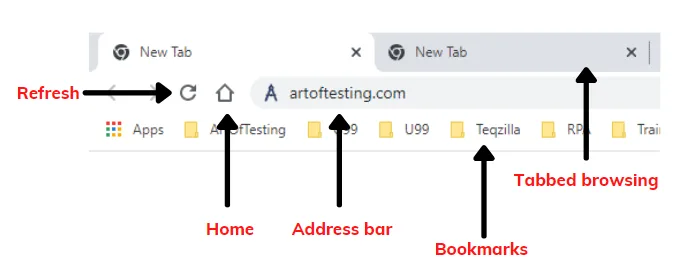
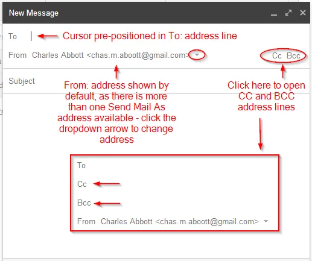

Expanded Nursing Uganda Explanation
Use the internet as a research resource in conducting various nursing care processes should be understood beyond a short definition. Link the concept to patient history, focused assessment, common risks, nursing priorities, documentation and evaluation of outcomes.
Contents, 17 sections (tap to expand)
01 What is the Internet?
The Internet is a massive, global network connecting millions of computers, allowing them to communicate with each other and share information. Think of it as a worldwide library, post office, and marketplace all in one. It is a powerful tool for learning, communication, and research, especially in the field of healthcare.
The World Wide Web (WWW or "the Web") is the most popular part of the Internet. It is a collection of websites and pages that you can access using a web browser.
02 1. A Web Browser
A web browser is the essential application software you use to access and view websites. It acts as your "window" to the internet.
- Common Browsers: Google Chrome, Mozilla Firefox, Microsoft Edge, Safari (for Apple devices).
- Key Features of a Browser: Address Bar: The long bar at the top where you type a website's address (URL, e.g., www.nursesrevisionuganda.com ).
- Navigation Buttons: Back, Forward, and Refresh/Reload buttons to move between pages.
- Tabs: Allow you to have multiple web pages open in one browser window.
- Bookmarks/Favorites: Lets you save the addresses of websites you visit often.
03 2. A Search Engine
The internet is huge. A search engine is a special website that helps you find information by searching for keywords. You do not need to know a website's exact address; the search engine will find it for you.
- Most Popular Search Engine: Google (www.google.com). Others include Bing and Yahoo.
- How it works: You type a question or keywords into the search box, and the search engine gives you a list of results (links to web pages, images, videos) that it thinks are relevant.
04 Effective Searching for Health Information: A Critical Skill for Nurses
As a student nurse, you will often use the internet for research. It is vital that you learn how to find accurate and trustworthy information.
- Be Specific: Instead of searching for "malaria", try searching for "malaria symptoms in children under five".
- Use Keywords: Think of the most important words related to your topic.
- Use Quotation Marks (" "): To search for an exact phrase. For example, searching for "communicable disease control" will only give you results with that exact phrase.
- Use the minus sign (-): To exclude a word. For example, malaria treatment -quinine will find information about malaria treatment but exclude pages that mention quinine.
05 2. Evaluating the Quality of Online Information (CRITICAL!)
- Who is the author? Is it a doctor, a nurse, a government health organization, or just an anonymous person? Look for an "About Us" page.
- What is the purpose of the site? Is it to educate, or is it to sell a product? Be very careful of websites that are trying to sell you "miracle cures".
- Is the information current? Health information changes quickly. Look for a date on the article or page. Is it from this year or 10 years ago?
- Is the information based on evidence? Does the article cite its sources, like research studies or official guidelines?
06 3. Recommended Sources for Health Information
Always start your search with these types of reliable sources:
- Government Health Organizations: World Health Organization (WHO), Centers for Disease Control and Prevention (CDC), Uganda Ministry of Health.
- Professional Medical Organizations: Websites of well-known hospitals, medical schools, and nursing associations.
- Medical Research Databases: PubMed, Google Scholar (these provide access to scientific articles, which are more advanced but very reliable).
07 Electronic Mail (Email): Professional Communication
Email is a method of sending and receiving digital messages over the internet. It is a primary tool for professional communication.
08 Understanding an Email Address
An email address has two parts, separated by the "@" symbol. For example: j.auma@university.ac.ug
- j.auma: The user's unique name (the username).
- university.ac.ug: The domain name, which tells you where the email account is hosted (in this case, a university in Uganda).
09 Composing a Professional Email
- To: The main recipient's email address.
- Cc (Carbon Copy): Use this to send a copy of the email to someone else for their information. They are not the main recipient.
- Bcc (Blind Carbon Copy): Use this to send a copy to someone secretly. The other recipients will not see the Bcc address. Use this to protect people's privacy when emailing a large group.
- Subject: A short, clear title for your email. Never leave the subject blank! A good subject could be "Question about Clinical Placement" or "Submission of Case Study Report".
- Body: The main message. Start with a polite greeting (e.g., "Dear Dr. Okello,"), write your message clearly, and end with a professional closing (e.g., "Sincerely," or "Best regards,"), followed by your full name and student number.
- Attachments: Use the paperclip icon to attach files (like a Word document or a PDF) to your email.
10 Internet Safety and Digital Citizenship: Protecting Yourself and Others
Using the internet comes with responsibilities. You must protect your own information and respect others.
11 1. Protecting Your Personal Information
- Strong Passwords: Create long passwords with a mix of uppercase letters, lowercase letters, numbers, and symbols (e.g., N@urs1ngIsGr8!). Do not use simple words like "password" or your name.
- Phishing Scams: Be very suspicious of emails that ask for your password, bank details, or personal information. These are often "phishing" scams, where criminals pretend to be a real company to trick you into giving them your data. Real companies will never ask for your password via email.
- Secure Websites (HTTPS): When you are on a website that requires a login or payment, look at the address bar. It should start with https:// and show a small padlock icon. The 'S' stands for 'Secure', meaning the information you send is encrypted and protected.
12 2. Understanding Malware
Malware (malicious software) is designed to harm your computer or steal your data.
- Viruses and Worms: Spread and damage your computer's files.
- Spyware: Secretly records what you do on your computer and sends the information to criminals.
- Ransomware: Locks up your files and demands a payment (a "ransom") to unlock them.
Protection: The best protection is to have good antivirus software installed and to be very careful about what you click on and what you download.
13 3. Being a Good Digital Citizen
- Be Respectful: The way you communicate online (in emails, social media, forums) reflects on you and your profession. Be polite and professional.
- Protect Patient Privacy: NEVER post any information about your patients online, even if you do not use their names. This includes pictures, descriptions of their condition, or stories about them. This is a major ethical and legal violation.
- Think Before You Post: Information posted online can be permanent. Do not post anything you would not want your future employer, your teachers, or your family to see.
- What is the difference between the Internet and the World Wide Web?
- You need to find the official Ugandan government guidelines for treating cholera. Write down the specific search query you would type into Google to get the best results.
- List three questions you should ask yourself to check if a health website is trustworthy.
- What do "Cc" and "Bcc" mean in an email, and when would you use Bcc?
- A website asks you to enter your National ID number. What two things should you check in your browser's address bar to see if the connection is secure?
- What is a "phishing" scam? Describe what one might look like.
- Why is it extremely important for a nurse to never post information about a patient on social media?
- Your friend wants to create a password for their email. Which of these is the strongest password and why? a) 123456 b) Kampala c) myPassw0rd!
Prepared by Nurses Revision
14 Nursing Uganda Clinical Lens
Use Introduction to internet use as a practical nursing topic, not only a memorized definition. Translate theory into safe decisions, accountability, communication and service improvement.
- What to understand first: define introduction to internet use, identify the normal or expected pattern, then explain what changes when the patient is unwell.
- Why it matters in care: the nurse must recognize risk early, explain findings clearly, document accurately and know when to escalate.
- How to revise it: connect each point to assessment, nursing diagnosis or care problem, intervention, rationale and evaluation.
15 Assessment Guide
- The problem, stakeholders, available resources, policy requirements and ethical issues.
- Risks to patients, staff, confidentiality, quality, costs and continuity.
- Documentation, reporting lines, supervision and evaluation measures.
16 Nursing Priorities, Rationales and Outcomes
- Use evidence, policy and professional standards to guide action.
- Communicate clearly, document decisions and protect confidentiality.
- Evaluate whether the action improves safety, learning or service delivery.
The rationale for these priorities is patient safety: nursing actions should prevent deterioration, reduce discomfort, support recovery and create clear evidence for the next caregiver.
- Expected outcome: The plan is documented, realistic, ethical and improves patient care or learning outcomes.
17 Patient Teaching and Revision Check
- Explain introduction to internet use in simple language the patient or caregiver can repeat back.
- Teach warning signs, medicine or follow-up instructions, hygiene or lifestyle points where relevant.
- For exams, prepare a short answer using: definition, causes or risk factors, signs, assessment, management, complications and prevention.
- For ward practice, document baseline findings, actions taken, patient response and the plan for review.
Illustrations and Diagrams (3)


Related Video Lectures
Watch nursing lecture videos on YouTube for this topic. Opens in a new tab.
Watch on YouTubeExternal link: YouTube may use its own cookies and terms. Nursing Uganda is not affiliated with YouTube.